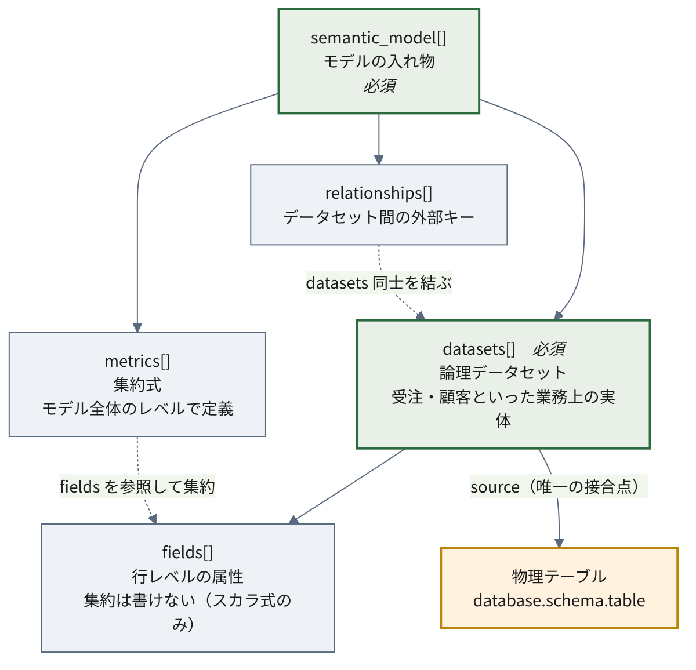
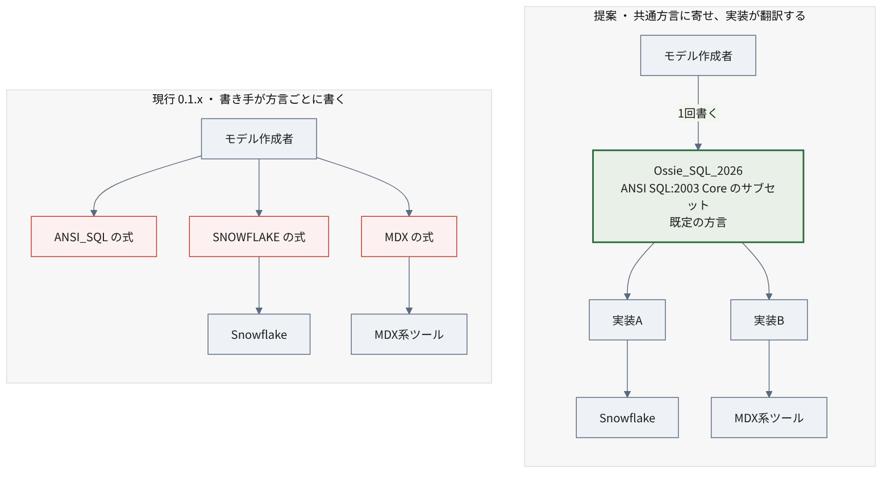

4 仕様の詳細
本章は仕様リポジトリの一次読解にもとづく。
参照はすべて 固定コミット 07be0176（2026-07-17）に対するもので、 比較対象はタグ osi-0.1.1-rc1。 以下、spec.md の行番号はこのコミット時点のものである。アクセス日はいずれも 2026-07-19。
4.1 どれを規範として読むか
仕様リポジトリの core-spec/ には複数のファイルがある。 どれを軸に読むかを最初に決めておく必要がある。
| ファイル | 位置づけ |
|---|---|
core-spec/osi-schema.json（330行） |
JSON Schema draft 2020-12。機械可読 |
core-spec/spec.md（594行） |
散文の仕様書。表形式の説明 |
core-spec/spec.yaml |
YAML 形式の仕様スケッチ。第3の表現（後述） |
core-spec/expression_language.md（35KB） |
2026-07-15 追加。後述 |
validation/validate.py（290行） |
参照実装のバリデータ。上記スキーマを読む |
README は3ファイルを並記するだけで、 どれが規範かを明示していない。 ただし参照バリデータ validate.py が構造検証に使うのは osi-schema.json であり、 散文と JSON Schema が食い違う箇所では、機械的に「通る／通らない」を決めるのは スキーマのほうである。そこで本レポートは、 実装が実際に従う osi-schema.json を軸に読む。これは公式な優先順位ではなく、 検証の再現性を担保するための筆者の方針である。散文とスキーマが食い違う箇所は後述する。
同じ仕様が3つの形式で表現されている点には注意が要る。
osi-schema.json— 機械可読。バリデータが読むspec.md— 散文と表。人が読むspec.yaml— YAML のスケッチ。人が読む
spec.yaml は JSON Schema ではなく、構造を YAML で書き下した見取り図である。 各キーに型と説明をコメントで添えた形式で、機械検証には使われない。
spec.yaml の書式は誤読を招きうる
spec.yaml はトップレベルに dialects: と vendor_name: を並べている。 これらは「# Enumerations」というコメントの下に置かれた列挙値の定義であって、 文書に書くべきフィールドではない。
しかし見た目は文書のひな型と区別がつかない。実際、 dialects をルート直下に出力してしまう実装が存在する（セクション 7.3）。
一方 osi-schema.json のルートは version と semantic_model しか許しておらず、 バリデータもこれで検証する。書式の見取り図（spec.yaml）と 機械検証の対象（osi-schema.json）は別物である。
参照バリデータは JSON Schema による構造検証に加え、 名前の一意性、参照の整合、そして sqlglot による SQL 式の構文検証を行う。 ただし MDX / TABLEAU / MAQL は sqlglot が解釈できないため検証をスキップする。
4.2 データモデル
4.2.1 全体像
構造は5つの要素からなる。まず関係を掴んでおくと、以降の表が読みやすい。

datasets が中心にある。 これは物理テーブルそのものではなく、 「受注」「顧客」といった業務上の実体を表す論理的な単位である。 source で物理テーブルを指すが、指すだけで、テーブルの構造をコピーはしない。
その下に fields が並ぶ。行レベルの属性、つまり 1行を見れば値が決まるものだけを置く。「受注日」「ステータス」「金額」がこれにあたる。 集約は書けない。
metrics は datasets の中ではなく、モデル全体のレベルに置かれる。 「売上合計」「顧客あたり平均受注額」といった集約式で、 複数のデータセットにまたがってよい。
relationships がデータセット同士を外部キーで結ぶ。
4.2.2 なぜ metrics だけ外側にあるのか
この配置が Ossie の設計上の特徴である。
Cube・MetricFlow・Malloy・Looker といった既存のセマンティック層は、 いずれもデータセットの内側に measure（集約対象）を置く。 「orders テーブルの amount カラムを合計する」という形で、 集約の定義がテーブルに紐づく。
Ossie はそうしない。フィールドはあくまで素材で、 それをどう集約するかは上位の metrics が決める。
この違いは実装との摩擦を生む。 消費側が「measure への参照」を 前提としている場合、OSI のメトリクスをどこに対応づければよいか決まらない。 実際に情報が落ちることは セクション 7.4 で観測している。 設計論争としても未決である（セクション 4.8）。
4.2.3 各要素の定義
4.2.3.1 Semantic Model
トップレベルは semantic_model（配列）。
| フィールド | 必須 | 備考 |
|---|---|---|
name |
○ | |
datasets |
○ | |
description / ai_context / relationships / metrics / custom_extensions |
4.2.3.2 Datasets
| フィールド | 必須 | 備考 |
|---|---|---|
name |
○ | |
source |
○ | 物理テーブル参照（database.schema.table）またはクエリ |
primary_key |
単一・複合いずれも配列で表現 | |
unique_keys |
配列の配列 | |
fields |
source が物理層との唯一の接合点である。 本レポートが参照する固定コミット（07be0176）時点では、仕様は形式を 「database.schema.table 形式または query」としか定めておらず、 識別子のクォートの扱いを規定していない。これが後の動作確認で問題を生む （セクション 7.3）。
なおスナップショット後の 2026-07-20、Snowflake のクォート付き識別子を扱う変更 （“quoted dot-separated identifier in snowflake”, #233）が main にマージされている1。 以下の記述はあくまで固定コミット時点のものである。
4.2.3.3 Fields
| フィールド | 必須 | 備考 |
|---|---|---|
name |
○ | |
expression |
○ | 方言対応のオブジェクト |
dimension |
is_time のみ |
|
label / description / ai_context / custom_extensions |
重要な点が2つある。
フィールドに measure（メジャー）の概念はない。 スキーマに measure キーは存在せず、 additionalProperties: false で追加も禁じられている。 フィールドはあくまで「グルーピング・フィルタ・メトリクス式で使う行レベル属性」であり、 集約は metrics 側の責務である。
フィールド式は集約を含んではならない。 仕様に明記がある（spec.md L234）。
Use scalar SQL expressions (no aggregations)
（スカラの SQL 式を使うこと。集約は用いない）
そして dimension が持つ情報は is_time の真偽のみである。 数値か文字列かといった型情報を仕様は運ばない。 消費側は物理テーブルのスキーマを見るか、独自に推論するしかない。 この設計の帰結は セクション 7.4 で実測する。
この欠落は、プロジェクト側でも改善項目として認識されている。ROADMAP は is_time に代えてフィールドのデータ型そのものを持たせる Issue #84 “Support field datatype rather than is_time” を挙げている2。 現行スキーマには未反映だが、既知の課題として作業領域に載っている。
4.2.3.4 Metrics
| フィールド | 必須 | 備考 |
|---|---|---|
name |
○ | |
expression |
○ | 方言対応のオブジェクト |
description / ai_context / custom_extensions |
セマンティックモデルレベルで定義され、複数データセットにまたがれる。 式はデータセット修飾付き（SUM(orders.amount)）で書かれており、 フィールド式が裸のカラム名なのと対照的である。
4.2.3.5 Relationships
from（多側）→ to（一側）を from_columns / to_columns の配列で結ぶ。 順序が対応し、要素数が一致する必要がある。複合キーに対応する。
4.3 式と方言
expression:
dialects:
- dialect: ANSI_SQL
expression: "customer_id"方言 enum は7種（spec.md L48-60）。
ANSI_SQL / SNOWFLAKE / MDX / TABLEAU / DATABRICKS / MAQL / BIGQUERY
同一フィールド・メトリクスに複数方言の式を併記できる。
metrics:
- name: total_revenue
expression:
dialects:
- dialect: ANSI_SQL
expression: "SUM(orders.amount)"
- dialect: SNOWFLAKE
expression: "SUM(orders.amount)"
- dialect: MDX
expression: "Sum([Orders].[Amount])"ここが設計上の要点で、方言間の変換は仕様の責務ではない。
4.3.1 方言ごとの式はどこから来るのか
仕様は方言間の変換を定義していない。 expression は方言別エントリの配列であり、 複数方言の式を併記できる形にはなっているが、ある方言の式から別の方言の式を 自動生成する仕組みは仕様に含まれない。変換を提供するかどうかは各実装に委ねられている。
したがって、Snowflake でも MDX でも動くモデルを配布したい場合、 仕様が保証するのは「併記された式はそのまま運べる」ことまでで、 併記されていない方言の式がどこから来るかは仕様の外にある。 実装が変換器を持てばそこで補われるし、持たなければ書き手が併記することになる。
「Write Once, Query Anywhere」の Write Once が仕様として保証しているのは、 おもに構造——データセット・フィールド・関係・AI向けの文脈——を一度書けば運べる、 という部分である。
式の可搬性については、仕様は併記の器を用意するだけで、 方言間の自動変換は提供しない。ANSI_SQL しか書かれていないモデルを MDX 系のツールが読んだとき何が起きるかも、仕様は定めていない。 その差を実装が変換で埋めるのか、書き手が併記で埋めるのかは、仕様の外の問題である。
この負担配分を変えようとしているのが、後述の expression language 提案である （セクション 4.7）。
4.4 拡張の仕組み
custom_extensions は vendor_name と任意の JSON 文字列 data の組で、 ベンダー固有情報の退避先となる。
コア互換性を壊さずに拡張するための仕組みだが、裏を返せば ここに入った情報は他ベンダーには解釈されない。 「無損失な round-trip」を謳う実装が、実際には ベンダー固有情報を custom_extensions に押し込んでいるだけ、という場合がある。 round-trip として無損失であることと、interchange として無損失であることは別である。
4.5 仕様内の不整合
Metrics セクションの Expression Object 定義と、直後の Examples が食い違っている。
定義側:
expression:
dialects:
- dialect: ANSI_SQL
expression: "..."例示側:
- name: total_revenue
expression:
- dialect: ANSI_SQL
expression: SUM(orders.amount)例示には dialects: キーがなく、expression が直接配列になっている。 JSON Schema の Expression は dialects を必須とし additionalProperties: false であるため、 例示のほうがスキーマ違反である。
なお公式サンプル examples/tpcds_semantic_model.yaml は定義側に従っている。
4.6 0.1.1 と 0.2.0.dev0 の差分
散文の spec.md と JSON Schema の両方を比較した。
4.6.1 散文で分かる差分
| 変更 | 内容 |
|---|---|
vendor_name の緩和 |
閉じた enum → 自由文字列。同じ一覧は非規範的な “well-known examples” として残り、HONEYDEW が追加 |
BIGQUERY 方言の追加 |
6種 → 7種 |
| 記述の修正 | タイポ、ASFライセンスヘッダ、“OSI” → “Apache Ossie” |
4.6.1.1 変更の理由
いずれもコミットメッセージに理由が明記されている3。
vendor_name の緩和（7e984cb）:
Allow any vendor or organization to define custom extensions without requiring changes to the core specification.
（どのベンダーや組織であっても、コア仕様の変更を要さずに カスタム拡張を定義できるようにする。）
閉じた列挙のままでは、拡張したいベンダーが増えるたびに 仕様本体を書き換える必要がある。その依存を切る変更である。 ASF 移管を控え、特定企業の名前を規範に埋め込まない形にする意図とも読めるが、 そこまでは明言されていない。
BIGQUERY の追加（39f6999）は外部コントリビュータによるもので、 既存の6方言に GoogleSQL を並べる素直な追加である。
4.6.2 JSON Schema でしか分からない差分
散文の比較だけでは見落とす構造変更がある。
ルート直下の dialects / vendors が削除されている。
| スキーマ | ルートで許されるプロパティ |
|---|---|
| 0.1.1 | version, dialects, vendors, semantic_model |
| 0.2.0.dev0 | version, semantic_model |
いずれもルートは additionalProperties: false。したがって 0.1.1 で妥当だったルート直下の dialects を持つ文書は、 0.2.0.dev0 ではスキーマ違反になる。
4.6.2.1 削除の理由と、リポジトリ内に残る不整合
このプロパティを削除したコミット c2233f0（2026-05-28）は、理由をこう書いている4。
These top-level enumeration properties were not referenced by any example or downstream consumer. validate.py only reads dialects from each expression’s per-dialect entries via the Expression definition.
（これらのトップレベルの列挙プロパティは、いかなる例からも下流の利用側からも 参照されていなかった。validate.py は Expression 定義を介して 各式の方言別エントリからのみ dialects を読む。）
整理としては筋が通っている。ルートの列挙は宣言されているだけで、 どこからも使われていない「死んだプロパティ」に見えた。
しかし同じリポジトリの dbt コンバータは、ルート直下に dialects を出力する。 固定コミット 07be0176 時点のコンバータ実装を実際に動かすと、 version 文字列を 0.2.0.dev0 としながらルート dialects を含む文書を吐く（セクション 7.3）。 つまり削除の根拠が言う「下流の利用側から参照されていない」プロパティを、 リポジトリ同梱のコンバータ自身が出力していることになる。
git 履歴をたどると、この出力はコンバータ導入時から続いており、 version 文字列だけが後に 0.2.0.dev0 へ更新され、ルート dialects の出力は残されている5。 削除の判断がこのコンバータを見落としていたのか、 別トラックとして許容していたのかまでは、コミットメッセージからは読み取れない。
結果として、公式コンバータは 0.1.1 の構造に 0.2.0.dev0 のラベルを貼った文書を出力する。 同一コミットの公式バリデータを通らない成果物であり、これは動作確認で実測している（セクション 7.3）。
なお spec.yaml がトップレベルに dialects: を並べている書式も、 この種の誤読を招きやすい（セクション 4.1）。
4.6.2.2 エンティティ定義は変わっていない
$defs を比較すると、SemanticModel / Dataset / Field / Metric / Relationship などエンティティ定義はすべて同一である。 差分は Dialect（BIGQUERY 追加）と Vendor（enum → 自由文字列）のみ。
各スキーマは version を const で固定している。enum でも pattern でもない。
| スキーマ | properties.version |
|---|---|
osi-0.1.1-rc1 |
{"const": "0.1.1"} |
main |
{"const": "0.2.0.dev0"} |
エンティティ定義がほぼ同一であるにもかかわらず、各スキーマは 自分のバージョン文字列だけを受け付ける。
構造的にほぼ同じ文書が、バージョン文字列だけで相互に排除される。
この設計が実装にどう波及するかは チャプター 7 で実測する。
4.7 expression language — 提案が文書化された段階
core-spec/expression_language.md が 2026-07-15 付で main に存在する （ステータス “Proposed Final”）。ASF 移管アナウンスの3週間後に入ったばかりである。
ただし「実装段階に入った」と読むのは早い。この文書が定義する新方言 Ossie_SQL_2026 は、 固定コミット時点の osi-schema.json の方言 enum にまだ入っておらず、既定方言化も実装されていない。 つまり現状は、口頭のアイデアではなく詳細な仕様案がリポジトリに文書として取り込まれた、 という段階である。初期リリース（0.1.1、後述の RC タグ）にも当然反映されていない。
4.7.1 何を変えようとしているのか
現行の設計では、方言ごとの式をモデル作成者が手で併記する（セクション 4.3）。 この提案はその負担配分を変える。

やり方は、方言どうしを相互変換するのではなく、 Ossie_SQL_2026 という共通の方言を新たに定義し、そこに寄せるというものである。 仕様には次の2点が明記されている。
- Create a new dialect in the Ossie spec: Ossie_SQL_2026, which refers to this language specification.
- Make Ossie_SQL_2026 the default dialect if one is not chosen.
（1) Ossie 仕様に新しい方言 Ossie_SQL_2026 を作る。これは本言語仕様を指す。 2) 方言が指定されなかった場合の既定を Ossie_SQL_2026 とする。）
N個の方言があるとき、相互変換なら N×N 通りの対応が要る。 共通方言を1つ置けば、各実装が「その方言を自分のエンジン向けに解釈する」だけで済む。 ハブを1つ設けて放射状にする構図である。
4.7.2 負担が書き手から実装へ移る
この提案の要点はここにある。
| 現行 0.1.x | Ossie_SQL_2026 提案 | |
|---|---|---|
| 方言差を吸収する主体 | 併記した書き手／変換を持つ実装 | 共通方言を解釈する実装 |
| 書き手がすることは | 併記したい方言の数だけ式を書く | 共通方言で1回書く |
| 可搬性の担保 | 仕様は保証しない | 採択・統合されれば仕様が実装に要求する |
提案文書は “the SQL expression language subset that Ossie-compliant implementations MUST support”（Ossie 準拠の実装がサポートしなければならない SQL 式言語のサブセット） と述べており、義務を実装側に置く設計になっている。 ただしこの MUST は “Proposed Final” 段階の提案文書内の記述であって、 現行の osi-schema.json に統合された要件ではない。 採択されて初めて「準拠実装への要求」として効く。
4.7.3 3段階コンプライアンスは実装に課される
REQUIRED / RECOMMENDED / MAY は、文書の書き方の区分ではなく、 実装が満たすべき水準を指す。
| 水準 | 意味 |
|---|---|
| MUST Support（REQUIRED） | 実装は必ず対応する。最小の可搬な式言語 |
| SHOULD Support（RECOMMENDED） | 対応が望ましい。全DBにあるとは限らない分析関数 |
| MAY Support（拡張） | 対応は任意 |
基盤に ANSI SQL:2003 Core（ISO/IEC 9075-2:2003）を選んだ理由として、 Snowflake・Databricks・PostgreSQL・BigQuery に広く実装されていること、 意味論が定まっていること、window 関数や CTE といった分析機能を持つことが挙げられている。
ただし注意が要る。CTE が選定の魅力として挙がることと、 式で CTE を使えることは別である。 同じ提案文書の “Not Supported” は CTE を明示的に対象外としている。つまり「CTE を持つ SQL:2003 Core を土台に選んだ」が、 「移植可能サブセットで CTE を書ける」わけではない。
ベンダー固有の機能は、従来どおり方言拡張から使える。 共通部分の可搬性を仕様が担保し、その外は各ベンダーに委ねるという切り分けである。
4.7.4 適用範囲は論理層のみ
この提案が対象とするのは論理層（メトリクス・フィールド・フィルタ）であり、 オントロジー層は対象外と明記されている。 オントロジー層でも同じ式言語を使えるとよいが、それは別提案として扱う、とある。
なおオントロジー層の対応先として、仕様は OWL に加えて RelationalAI の (Py)Rel と Goldman Sachs の Legend を挙げている。 チャプター 3 で触れた2つの系譜が、ここでも参照されている。
4.7.5 オントロジー層の言語は ORM 系である
オントロジー層そのものは別ファイル ontology/ontology.md で定義されている6。 その設計は、BI 系のセマンティックモデルとも、RDF/OWL の狭義オントロジーとも異なる、 Object-Role Modeling（ORM）系である。根拠は次のとおり。
- 関係は n 項である。
relationshipは “relate objects of one or more concepts” と定義され、OneToOneは “only for binary relationships” と但し書きされる。 二項に限らない関係を前提にしている - role（役割名）を第一級で扱う。各関係は
rolesを持ち、 概念は「その関係で最初の role を演じる」形で関係を束ねる - verbalizes（自然言語化）が必須。関係には
verbalizes: [ '{Person} is identified by {SocialSecurityNr}' ]のように、 リンクを自然言語で言い表すパターンを付ける
n 項関係・role・verbalizes を核に据える設計は、ORM / NIAM（fact-based modeling）の 系譜そのものである。RelationalAI の (Py)Rel が同系統であることとも符合する。
つまり Ossie は、論理層（次元的なセマンティックモデル）と オントロジー層（ORM 系）という、由来の異なる2つのモデリング伝統を 1つの仕様の中で接ごうとしている。チャプター 3 の 「オントロジーの語には幅がある」で触れた論点の、仕様側の裏づけである。
4.7.6 集約関数の分解可能性分類
技術的に最も興味深いのはこの部分である。集約関数を4つに分類する。
| 分類 | 例 | 性質 |
|---|---|---|
| Distributive | SUM, COUNT, MIN, MAX | 部分集約の結果をそのまま再集約できる |
| Algebraic | AVG, STDDEV | 中間状態を持てば再集約できる |
| Holistic | MEDIAN, COUNT DISTINCT | 再集約できない |
| Sketch-based | — | 近似構造を用いる |
これは多段集約、すなわち cross-grain 再集約の土台になる。 粒度をまたいで指標を積み上げられるかどうかは、 セマンティック層が実用に耐えるかを分ける論点であり、 それを仕様レベルで扱おうとしている点は評価できる。
ただし再集約規則そのものは Google Doc にあり、Apache リポジトリにない（セクション 5.3）。
4.7.7 移植不能な部分の隔離
日時フォーマット文字列は Oracle 系 TO_CHAR / strftime / Java LDML の 三つ巴で移植不能である。仕様はこれを EXPERIMENTAL として明示的に隔離したうえで、 全主要エンジンで表現可能な「移植可能コア」だけを定義している。
解けない部分を解けないと書く姿勢は、仕様の書き方として誠実である。
4.8 未決の設計論点
GitHub Discussions には設計上の議論が公開されている。 以下は結論が出ていない主な論点である。
これらは Discussion 上で散発的に交わされているだけではない。 プロジェクトの ROADMAP.md は共通の式・クエリ言語（“Semantic Query Language & Reference Engine”）を 明示的な取り組みとして掲げており7、フィールドのデータ型は前掲 Issue #84、 検証済みクエリは Discussion #82 として、それぞれ追跡対象になっている。 「未決」は放置ではなく、作業項目として認識されたうえでの未決である点は補っておく。
4.8.1 先に用語を2つ
measure（メジャー）とは、集約の対象となる数量と、その集約方法の組を指す。 Cube・MetricFlow・Looker といったセマンティック層では、 これをデータセット（テーブル）の内側に定義する。
# dbt/MetricFlow のネイティブ記法の例
semantic_models:
- name: orders
measures:
- name: amount_sum # ← これが measure
agg: sum # 何を(expr)どう集約するか(agg)を持つ
expr: amount「orders テーブルの amount カラムを合計したもの」に amount_sum という名前を与え、 メトリクスはその名前を参照する。集約の定義がテーブルに紐づくのが特徴である。
メトリクスツリーは、ひとつの指標を構成要素へ分解して木構造で表したものを指す。 「売上 = 客数 × 客単価」「客数 = 新規 + 既存」のように辿れる形にして、 どの要素が全体に効いているかを見るために使う。 value driver tree などとも呼ばれ、名称自体が定まっていない。
4.8.2 集約方法をどう表現するか
3案が並存し、未採択のままである。
| 案 | 提唱 | 内容 |
|---|---|---|
| 構造化 enum | AtScale | aggregation_method を列挙型で持つ |
| 関数名前空間 | Lloyd Tabb（Malloy） | OSI_* 関数として定義 |
| SQLサブセット + エスケープハッチ | Snowflake | 移植保証付きのサブセットを定め、外れる場合は逃がす |
実装フェーズに進んだのは3番目である（セクション 4.7）。
4.8.3 メトリクスツリー
「メトリクスツリー」が派生メトリクスなのかどうかで、 提起者と RelationalAI が真っ向から対立している （“I am definitely not talking about derived metrics” ＝私が言っているのは派生メトリクスでは断じてない）。 用途も「相関検証」対「エージェントへの推論コンテキスト」で割れており、 名称すら value driver tree / metric tree / derived metrics で定まっていない。
4.8.4 最上位 metrics か dataset 内 measures か
セクション 4.2 で見たとおり、Ossie は metrics をモデル全体のレベルに置く。 既存のセマンティック層は、いずれもデータセットの内側に measure を置く。
どこが違うのか。
| dataset 内 measure 方式 | Ossie の最上位 metrics 方式 | |
|---|---|---|
| 集約の定義場所 | テーブルに紐づく | モデル全体 |
| 「売上合計」を定義するには | orders の中に sum(amount) を置く |
どのデータセットにも属さない式として書く |
| 複数テーブルにまたがる指標 | 扱いにくい。measure は1テーブルに属するため | 書きやすい。最初からモデル全体を見ている |
| 消費側への写像 | 既存ツールと同型 | 対応先が決まらない |
Ossie 方式の利点は、複数のデータセットにまたがる指標を素直に書けることである。 「顧客あたり売上」のように、注文テーブルと顧客テーブルの両方を要する指標を、 どちらかのテーブルの所属物にせずに定義できる。
一方の難点が、消費側との噛み合わなさである。 dbt/MetricFlow は「メトリクス = measure への参照」を前提とするので、 measure を持たない OSI のメトリクスを受け取ると参照先が空になる。 実際に集約関数が脱落することは セクション 7.4 で実測している。
この噛み合わなさを背景に、議論スレッドでは複数の参加者から 「分けることに何の価値があるのか」「名前空間の問題なのか、意味論的な違いがあるのか」 という問いが投げられている。主要な実装が揃って measure 方式を採っている以上、 そこから外れる Ossie 方式の側が理由を示すべきではないか——という含意の問いであり、 いわば立証責任を Ossie 側に置く論法が参加者から提示された形である。 これに対し仕様側は「メトリクス言語ワーキンググループの重要な論点であり、 提案がまとまり次第、公開文書を出す」という回答にとどまっている8。
4.8.5 横断する軸 — どこまで仕様で構造化するか
個々の論点を貫いているのは、何をどこまで仕様の構造として定めるかという問いである。
対立する2つの立場がある。
構造化する側は、意味を明示的なフィールドとして仕様に持たせたい。 検証できる、実装が解釈を誤らない、という利点がある。 代わりに仕様が大きくなり、実装がすべてを解釈する義務を負う。
構造化しない側は、自由テキストや汎用の入れ物に留めたい。 仕様が小さく保たれ、実装の負担が軽い。用途の変化にも追随しやすい。 代わりに、解釈は消費側（近年はしばしば LLM）に委ねられ、 同じ文書が実装によって違う意味に読まれうる。
要するに柔軟性と実装コストのトレードオフである。 仕様を厚くすれば相互運用の精度は上がるが、 その水準を満たせる実装は減り、普及が遅れる。
この緊張は具体的な議論にも現れている。 たとえば「検証済みクエリ（verified queries）を ai_context の中に埋めるのではなく、 仕様の第一級要素にすべきだ」という提案には賛同が集まっている9。 一方で「検証やパーサを提供して品質を担保したいが、 方言を増やすほどそれが難しくなる」という指摘もある10。 後者は構造化を志向しつつ、その実装コストが方言の数に比例して膨らむことを述べている。
「特定ベンダーの参加者が一貫して構造化に反対している」といった、 所属と設計上の立場の相関は、公開されている議論からは読み取れなかった。
構造化を推す発言も慎重な発言も、複数の組織の参加者から出ている。 実装コストへの言及も、特定ベンダーに偏ってはいない。
4.8.6 議論が付いていない論点
一方で、提起されたまま反応が少ない論点もある。
- grain（粒度）を first-class の概念として扱うべきか
- Ossie は交換フォーマットなのか、実行時の標準まで担うのか
- インポータは方言変換の義務を負うのか
- FIBO のような既存オントロジーとどう関係づけるか（チャプター 3）
いずれも仕様の性格を決める問いだが、 2026年7月時点でコメントが付いていないか、ごく少ない。
いずれも答えを出すのが難しい問いではある。ただし反応の少なさから需要の有無までは読み取れない。 コメントが付いていないことは観測できるが、公開 Discussion 上の反応量だけでは、 関心が弱いのか、単に議論の順番が回ってきていないだけなのかは判定できない。
需要の側から言えば、クエリ時にパラメータを渡せるメトリクスは、 累積 window の議論と、金融領域の posted-at / settled-at の議論で それぞれ独立に必要性が語られている。 仕様にはまだ入っておらず、専用の議論スレッドも見当たらない。
apache/ossie PR #233（2026-07-20 マージ）。本レポートの動作確認は 2026-07-17 の固定コミットに対して行っており、この変更は反映していない。アクセス日 2026-07-21↩︎
apache/ossie Issue #84: Support field datatype rather than is_time。ROADMAP の改善項目として参照。アクセス日 2026-07-21↩︎
旧リポジトリ open-semantic-interchange/OSI の履歴より。コミット
7e984cb（2026-05-21）、c2233f0（2026-05-28）、39f6999（2026-06-02）。アクセス日 2026-07-20。和訳は筆者による↩︎同上、コミット
c2233f0。和訳は筆者による↩︎固定コミット
07be0176のconverters/dbt。ルートdialectsを出力する挙動と、version="0.2.0.dev0"化の経緯は同ディレクトリの git 履歴による。本レポートは実際の出力を セクション 7.3 で確認している。アクセス日 2026-07-21↩︎Apache Ossie, “core-spec/ontology/ontology.md”（
version: 0.2.0.dev0）。コミット07be0176（2026-07-17）時点。アクセス日 2026-07-20↩︎apache/ossie の ROADMAP.md（固定コミット
07be0176）。式・クエリ言語は “Future Efforts” に置かれ、専任ワーキンググループは未設置。アクセス日 2026-07-21↩︎apache/ossie Discussion #29: Top level “metrics” vs. dataset-level “measure”s, アクセス日 2026-07-20↩︎
apache/ossie Discussion #82: Add
verified_queriesas a core element of the spec, アクセス日 2026-07-20↩︎apache/ossie Discussion #35 の Kurt Stirewalt（RelationalAI）の発言。“I personally think we should lean into validation by providing parsers and type checkers that help ensure the quality of a model in the OSI. That gets harder to do the more we try to support different dialects.”（OSI のモデル品質を担保するパーサや型検査器を提供する方向に寄せるべきだと個人的には思う。ただし対応する方言が増えるほど、それは難しくなる。）アクセス日 2026-07-20。和訳は筆者による↩︎